L'Occidente Demoralizzato
Come i regimi autoritari parassitano la libertà occidentale
Nel dibattito pubblico contemporaneo, persiste spesso l'idea che la ricchezza sia un "gioco a somma zero", un'equazione statica dove l'abbondanza di pochi deve necessariamente derivare dalla sottrazione sistematica ai danni di molti. Questa visione, nota come la "fallacia della torta fissa", suggerisce che la ricchezza globale sia un'entità immutabile, ignorando il fatto che essa non viene semplicemente "divisa", ma generata attraverso l'innovazione, il lavoro e lo scambio di valore. Se l'economia fosse davvero a somma zero, l'umanità sarebbe rimasta ferma all'età della pietra; invece, la storia del progresso dimostra che quando un individuo crea un prodotto o un servizio utile, non sta rubando fette di torta altrui, sta letteralmente ingrandendo la torta per l'intera società.
Tuttavia, per comprendere le crisi sistemiche che stiamo analizzando, è fondamentale distinguere tra chi crea ricchezza e chi la estrae. Mentre un mercato sano premia la generazione di valore, i regimi autoritari e i sistemi parassitari operano invece in una dimensione di estrazione di ricchezza. In questo scenario, come nel caso delle economie "ostaggio" della corruzione e della repressione, la prosperità dei vertici non è il risultato di un progresso condiviso, ma di un drenaggio forzato di risorse che condanna la nazione alla povertà. In questo articolo esploreremo come la vera libertà economica non sia una minaccia per l'equità, ma l'unico antidoto contro quei sistemi che, incapaci di creare valore, preferiscono trasformare la nazione in un campo di battaglia per il controllo di una torta che si fa sempre più piccola.
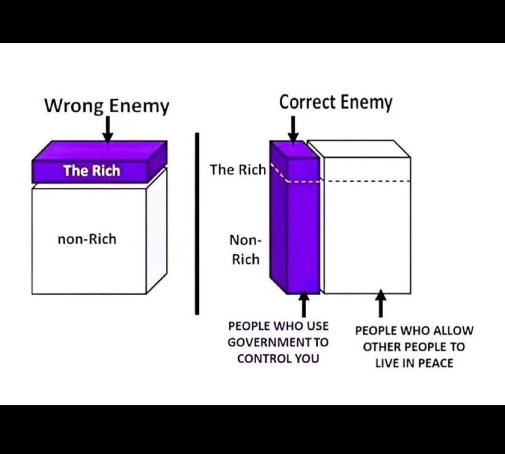
Il caso IRGC: Un cartello terroristico tra terrore interno ed esportazione della violenza
L'archetipo perfetto di questo parassitismo economico e sociale è rappresentato dal Corpo delle Guardie della Rivoluzione Islamica (IRGC) in Iran. Lungi dall'essere un normale apparato statale, l'IRGC opera come un vero e osannato cartello del terrore globale che indossa il "costume" di una nazione. All'interno, il regime mantiene il controllo attraverso una violenza di Stato sistematica: stupri e torture nelle prigioni come Evin, estorsione di false confessioni, accecamento intenzionale dei manifestanti, esecuzioni di massa pro capite (inclusi minori e dissidenti accusati di "guerra contro Dio") e persino l'arruolamento forzato di bambini nei checkpoint militari. Questa brutalità si riflette all'esterno in un'agenda ideologica radicale che rigetta qualsiasi moderazione post-Khamenei; l'IRGC continua a ricostruire freneticamente il proprio arsenale missilistico e a finanziare proxy regionali (Hamas, Hezbollah, Houthi) responsabili del massacro di civili, orchestrando parallelamente complotti terroristici e omicidi mirati in ben tre continenti. In questo quadro, il totalitarismo teocratico non è solo un fallimento economico a somma zero che affama i cittadini, ma un sistema di estrazione e distruzione che sopravvive unicamente soffocando la connettività digitale e la libertà del proprio popolo, una società ormai profondamente secolarizzata che rifiuta in larga maggioranza l'estremismo imposto da Teheran.
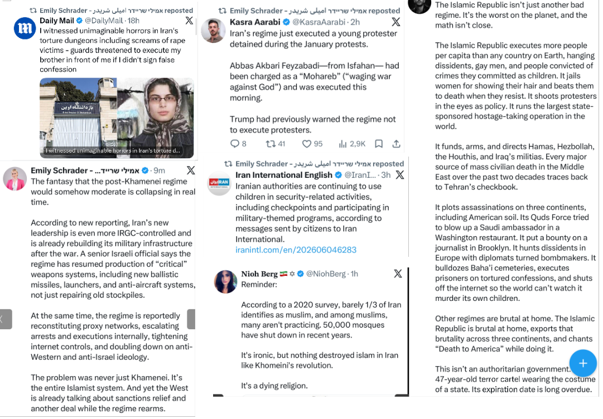
Guerra asimmetrica nel Golfo: L'infiltrazione a Bubiyan e il collasso dell'OPEC
La disperazione strategica della Repubblica Islamica ha ormai superato i confini del conflitto diretto, sfociando in atti di vero e proprio terrorismo economico e territoriale contro gli Stati del Golfo. L'infiltrazione armata da parte di membri dell'IRGC sull'isola kuwaitiana di Bubiyan rappresenta un gravissimo atto di aggressione geopolitica, fermato solo dalla prontezza delle forze di sicurezza del Kuwait e condannato fermamente dagli Emirati Arabi Uniti, che hanno ribadito come la sicurezza dei partner regionali sia un elemento indivisibile dalla propria. Questo tentativo di destabilizzazione avviene in concomitanza con il blocco militare dello Stretto di Hormuz operato dal regime, un atto definito dagli emiratini come "terrorismo economico" globale. Le conseguenze di questo strangolamento marittimo si riflettono nel collasso della produzione petrolifera dell'OPEC ai minimi storici dal 1990, con il Kuwait costretto a tagliare l'output a meno di un terzo rispetto ai livelli pre-bellici.
Sovranità industriale e la risposta degli Emirati
Di fronte a un regime teocratico che risponde alla propria crisi interna ed economica dichiarando una guerra di fatto ai vicini, la strategia degli Emirati Arabi Uniti si sta muovendo verso una totale riconfigurazione della propria sicurezza e indipendenza. Annunciando la storica uscita dall'OPEC, il Ministro dell'Industria e delle Tecnologie Avanzate emiratino, il Dr. Sultan Ahmed Al Jaber, ha tracciato la rotta per un futuro che non dipenda più dai ricatti energetici di Teheran, focalizzandosi su una radicale "sovranità industriale" legata alla produzione avanzata e all'Intelligenza Artificiale. Mentre analisti regionali evidenziano la colpevole passività di attori occidentali come la NATO, l'Unione Europea e il Regno Unito di fronte alle provocazioni iraniane, l'asse del Golfo — sostenuto da una forte spinta bilaterale — si prepara a rispondere con fermezza a ogni ulteriore escalation. L'economia del futuro, come delineato da Abu Dhabi, non sarà più ostaggio dei cartelli o delle milizie, ma si fonderà su tre pilastri invalicabili: l'energia che alimenta, la tecnologia che pensa e l'industria che produce.
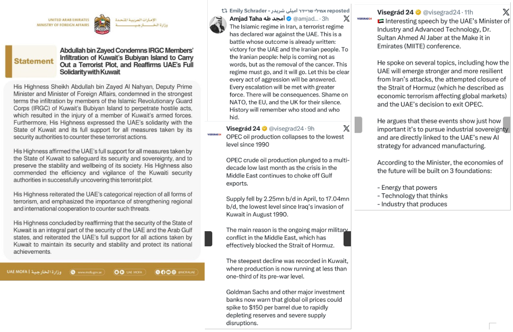
L'Impero della Disinformazione: La guerra asimmetrica dell'IRGC sul web e nelle università
Per sostenere una narrativa così palesemente distante dalla realtà, la Repubblica Islamica ha edificato un colossale impero della disinformazione, investendo cifre astronomiche nella manipolazione dell'opinione pubblica globale a discapito della reale attività diplomatica. I dati rivelano che il regime spende ben 404 milioni di dollari all'anno per la propaganda di Stato (attraverso l'emittente IRIB e i media di regime), a fronte di appena 67 milioni destinati all'intero Ministero degli Affari Esteri e alle ambasciate nel mondo. Questo rapporto di 6 a 1 dimostra inequivocabilmente che la priorità di Teheran non è il dialogo internazionale, ma il controllo asfissiante delle informazioni interne e l'indottrinamento di quelle estere. Fuori dai propri confini, questa strategia si traduce nel finanziamento e nel coordinamento di reti transnazionali radicali: indagini recenti evidenziano come organizzazioni con entrate miliardarie, che includono coalizioni marxiste e gruppi legati a simpatizzanti del Partito Comunista Cinese, orchestrino centinaia di proteste coordinate in tutto il mondo, dove l'Occidente viene demonizzato e si invoca apertamente la distruzione di Israele.
- Leggi il testo integrale della lettera dell'IRGC rivolta agli Stati Uniti
- Leggi il testo integrale dell'Intervento di Reza Pahlavi
Infiltrazione culturale e l'assalto digitale dei Bot
Questa guerra cognitiva non si limita alle piazze, ma penetra capillarmente nei centri nevralgici dell'Occidente. Per anni, regimi ostili come quello di Teheran e di Pechino hanno iniettato miliardi di dollari nelle università americane, plasmando la cultura dei campus, comprando influenza e guadagnando l'accesso a ricerche scientifiche sensibili finanziate dai contribuenti occidentali, una deriva che solo di recente ha visto una reazione legislativa bipartisan negli Stati Uniti per bloccare i fondi federali agli atenei che accettano denaro da Iran, Cina e Russia. Parallelamente, lo scontro si è spostato massicciamente sulle piattaforme social, in particolare su X, oggi letteralmente invasa da account fake, bot e reti coordinate dall'IRGC. Questa massiccia operazione di "comportamento inautentico" inonda l'algoritmo ripetendo all'infinito fake news debunkate, teorie del complotto islamiste e attacchi mirati contro le voci ebraiche e dissidenti, creando una realtà virtuale distorta per occultare i massacri reali che il regime compie al buio, lontano dagli occhi del mondo.
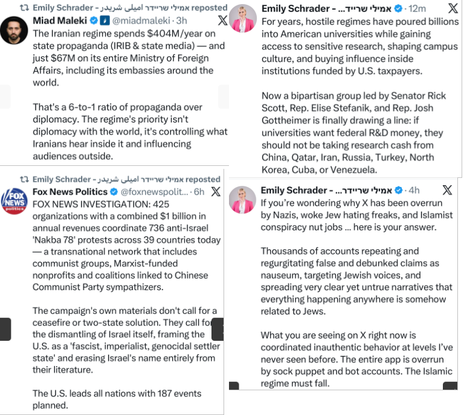
Il Modello Qatar: L'ingegneria del bias culturale e la cattura delle istituzioni occidentali
Se l'IRGC rappresenta la faccia brutale e asimmetrica dei regimi autoritari, il Qatar incarna una forma ancora più insidiosa di alterazione della verità: l'uso sistematico di capitali immensi per comprare influenza e fabbricare un profondo bias culturale all'interno dell'Occidente. I dati sul lobbying estero negli Stati Uniti (2016-2024) sono spietati: mentre Israele spende circa 20,66 dollari pro capite, il Qatar investe la cifra astronomica di 781,13 dollari per cittadino, surclassando qualsiasi narrazione sulla presunta onnipotenza di altre lobby. Questa penetrazione finanziaria serve a normalizzare e a fare il "lavaggio della faccia" (tramite network globali come Al Jazeera) all'islamismo radicale e alle storiche relazioni di Doha con organizzazioni terroristiche come Hamas e la Fratellanza Musulmana, quest'ultima attivamente impegnata nel sovvertire i valori democratici occidentali. Mentre sul piano geopolitico ed energetico Doha si muove nell'ombra, disattivando i transponder delle proprie navi cisterna per far transitare clandestinamente il GNL attraverso il blocco dello Stretto di Hormuz verso la Cina e il Pakistan,, sul piano culturale ed europeo il regime qatariota finanzia la costruzione di mega-moschee controllate dagli islamisti (come a Strasburgo, nel cuore dell'UE), applicando al contempo una rigida intolleranza in patria, dove ai cristiani è vietato erigere luoghi di culto.
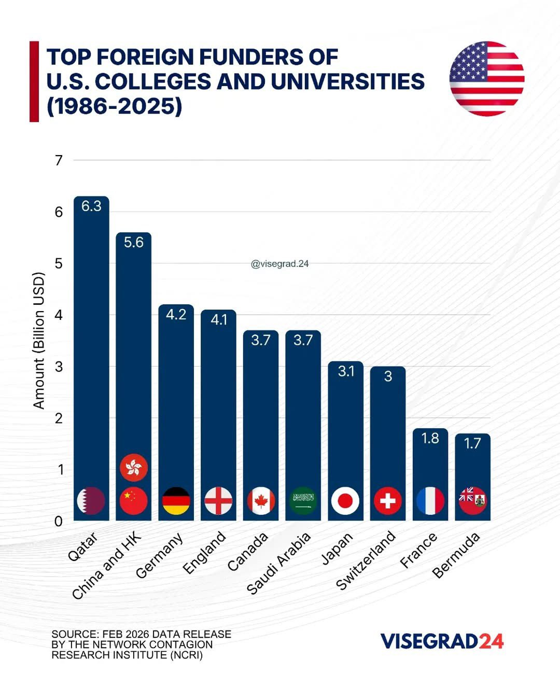
Dal Qatargate alle Università: La corruzione del tessuto democratico
Questo soft power si trasforma regolarmente in hard corruption quando penetra nei palazzi del potere e della cultura occidentali. Il "Qatargate" è passato alla storia come il più grande scandalo di corruzione nel Parlamento Europeo, un terremoto istituzionale che ha visto l'arresto e il coinvolgimento di diversi eurodeputati (tra cui Antonio Panzeri, Eva Kaili, Andrea Cozzolino, Marc Tarabella e Marie Arena, quest'ultima nota per le sue posizioni incendiarie contro Israele e nelle cui disponibilità familiari sono stati rinvenuti centinaia di migliaia di euro in contanti). Questo colossale sistema di tangenti e finanziamenti occulti non serve solo a orientare le decisioni politiche delle democrazie, ma si salda con i miliardi di dollari versati per anni nelle università americane ed europee. L'obiettivo finale di questa strategia è chiaro: distorcere la percezione pubblica dei cittadini occidentali, silenziando i critici, radicalizzando il dibattito accademico e istituzionale, e creando una barriera di fumo ideologica per proteggere un'agenda teocratica ed estrattiva, che mira a indebolire l'Occidente sfruttando proprio le sue libertà costituzionali.
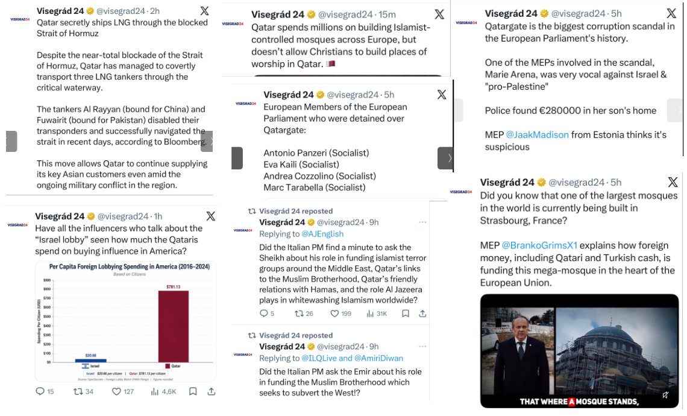
I parassiti dell'anima occidentale: La fabbricazione del vittimismo e le proteste prezzolate
La penetrazione delle forze autoritarie all'interno delle democrazie occidentali non si limita al lobbying economico, ma assume la forma di un vero e proprio parassitismo ideologico. Le ondate di proteste "anti-guerra" che paralizzano periodicamente le città occidentali non sono esplosioni spontanee di dissenso organico, ma manifestazioni coordinate e finanziate da una complessa infrastruttura transnazionale. Ne è un esempio il legame finanziario tra l'imprenditore Neville Roy Singham, strettamente connesso all'apparato del Partito Comunista Cinese, e gruppi radicali della sinistra americana come 'The People's Forum' o 'Code Pink'. Questo parassitismo sfrutta i valori democratici per iniettare narrazioni tossiche, dove la realtà viene costantemente capovolta attraverso la fabbricazione industriale del vittimismo. Ne sono un esempio agghiacciante le tattiche di propaganda sul campo, documentate da filmati in cui genitori spingono i propri figli in tenera età a molestare le forze di sicurezza israeliane nella speranza di provocare un arresto da filmare e vendere a testate internazionali come la BBC o Sky News, usando l'infanzia come un'arma di manipolazione mediatica.
La dissonanza cognitiva dei portavoce occidentali e lo scudo civile
Questo sistema parassitario prospera sulla profonda dissonanza cognitiva e sull'ipocrisia dei suoi stessi portavoce occidentali. Figure istituzionali come l'eurodeputata francese Rima Hassan difendono strenuamente agende islamiste (da Hamas all'IRGC) godendo al contempo di uno stile di vita ultra-occidentale e liberale che i regimi da lei protetti negherebbero brutalmente a qualsiasi donna, data la sistematica repressione e le violenze contro chi non indossa il velo a Gaza o a Teheran. Lo stesso sdoppiamento morale si riflette nei media occidentali, pronti a sposare acriticamente la narrativa ufficiale del terrorismo: mentre opinionisti di primo piano liquidano come semplici "accuse della difesa" le prove del legame tra reporter locali e milizie, sono gli stessi avvisi di martirio di Hamas e del Jihad Islamico a confermare che decine di presunti giornalisti a Gaza erano in realtà combattenti operativi che abusavano del giubbotto della stampa.
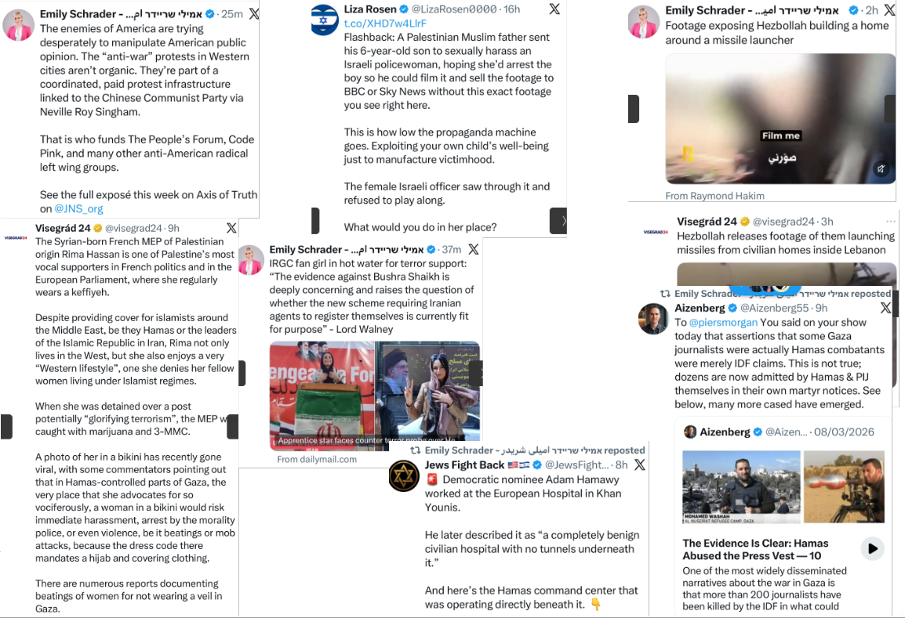
La falsificazione dello spazio civile: Ospedali e case come armi
L'atto finale di questo parassitismo informativo è l'occultamento deliberato delle infrastrutture militari all'interno di contesti civili e umanitari, una strategia volta a costringere l'Occidente a proteggere i terroristi per evitare danni collaterali. Nonostante le dichiarazioni di medici e attivisti democratici che descrivono strutture come l'Ospedale Europeo di Khan Younis come spazi "puramente benigni e civili", le evidenze sul campo continuano a mostrare la presenza di centri di comando di Hamas operativi direttamente al di sotto di essi. Una tattica identica a quella utilizzata da Hezbollah in Libano, le cui stesse fonti video mostrano rampe di lancio di missili installate all'interno di case private, costruendo letteralmente le mura domestiche attorno agli arsenali. Chi, nel giornalismo indipendente, tenta di decostruire questa immensa barriera di fumo si scontra con una narrazione prevalente che preferisce ignorare l'evidenza dei fatti, permettendo ad agenti d'influenza stranieri (come nel caso delle inchieste antiterrorismo nel Regno Unito su figure come Bushra Shaikh) di muoversi indisturbati all'interno delle nostre società per conto di Teheran.
L'arma del sadismo: Il terrorismo sessuale di Hamas e le prove sul campo
Il parassitismo dei proxy iraniani non si limita alla manipolazione informativa, ma tocca i vertici dell'orrore attraverso l'uso sistematico della violenza di genere come arma tattica. Un imponente rapporto indipendente, basato sull'analisi visiva di oltre 10.000 fotografie e video per un totale di 1.800 ore di indagine, ha documentato l'esatta e agghiacciante portata del "terrorismo sessuale" perpetrato da Hamas. Le testimonianze dei sopravvissuti descrivono stupri di gruppo brutali, torture metodiche ed esecuzioni sommarie, consumate in un clima di macabra derisione da parte dei miliziani. Le conclusioni della Commissione Civile e i riscontri del Dinah Project confermano che queste atrocità, che includono casi aberranti in cui i civili sono stati costretti a compiere abusi sui propri familiari, non sono stati atti isolati ma crimini di guerra pianificati, crimini contro l'umanità e atti genocidari volti a distruggere il tessuto psicologico e sociale dell'avversario. Una violenza speculare a quella esercitata a Nord da Hezbollah che, come dimostrano i recenti ritrovamenti delle Forze di Difesa Israeliane nel sud del Libano, continua a installare lanciamissili anticarro Kornet di fabbricazione russa all'interno dello spazio civile per colpire deliberatamente soldati e comunità di frontiera.
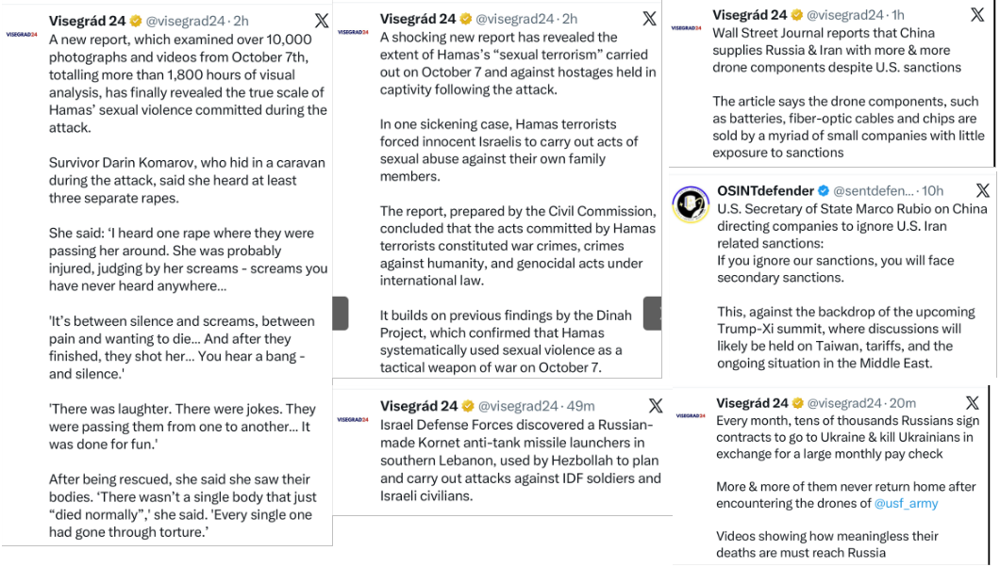
L'Asse dell'Elusione: Il ruolo di Pechino e l'economia del mercenariato
Questo network del terrore non potrebbe operare in modo così efficiente senza un'architettura globale di complicità che ne garantisce il costante rifornimento materiale. Rapporti del Wall Street Journal evidenziano come la Cina continui a pompare componenti tecnologiche critiche per la produzione di droni (tra cui batterie, cavi in fibra ottica e microchip) verso la Russia e l'Iran, aggirando le sanzioni occidentali. Questo flusso costante è alimentato da una miriade di piccole aziende cinesi scarsamente esposte ai mercati internazionali e quindi impermeabili alle ritorsioni economiche. Di fronte alla direttiva di Pechino che impone alle proprie imprese di ignorare le restrizioni occidentali legate all'Iran, la diplomazia statunitense ha risposto minacciando dure sanzioni secondarie, portando la questione al centro dell'agenda geopolitica globale del 2026 e dei futuri vertici bilaterali.
La svalutazione della vita e il parassitismo finanziario
L'atto finale di questo ecosistema autoritario è la totale mercificazione della vita umana, visibile sia in Medio Oriente che sul fronte ucraino. In Russia, il parassitismo statale si manifesta nel reclutamento mensile di decine di migliaia di cittadini che accettano di andare a combattere in cambio di ingenti compensi finanziari, trasformando la guerra in un ammortizzatore sociale per popolazioni vulnerabili. Questa disperazione economica viene cinicamente sfruttata dal Cremlino per alimentare una carneficina costante, dove la vita dei soldati viene sacrificata in massa dai droni ucraini in morti prive di qualsiasi significato strategico. Si chiude così il cerchio del gioco a somma negativa dei regimi totalitari: un sistema parassitario globale dove il denaro della vendita clandestina di risorse e i microchip cinesi servono unicamente a finanziare il sadismo sul campo di battaglia, l'annientamento dei diritti umani e il sacrificio economico dei propri stessi cittadini.
Il network nel cuore dell'Occidente: Il caso del Regno Unito e del Canada
Le ramificazioni dell'IRGC e dei suoi proxy, Hamas e Hezbollah, hanno ormai trasformato le metropoli occidentali in hub logistici e operativi, sfruttando le maglie larghe delle democrazie per riciclare capitali e coordinare il terrore. Nel Regno Unito, l'allarme ha raggiunto livelli senza precedenti: la polizia ha recentemente isolato un parco a Londra dopo le minacce di una cellula terroristica islamista, la quale ha rivendicato il lancio di droni contenenti materiale radioattivo e cancerogeno contro l'ambasciata israeliana. Nonostante decine di complotti terroristici sventati sul suolo britannico, miliardi di dollari dell'IRGC riciclati direttamente attraverso i canali finanziari di Londra, e attacchi continui contro basi e imbarcazioni del Regno Unito da parte del regime, la risposta della leadership politica, guidata da Keir Starmer, viene duramente criticata per la sua eccessiva prudenza, accusata di preferire un fragile e passivo "stallo" diplomatico piuttosto che un contrasto deciso alle minacce di Teheran.
Il santuario dei proxy: Riciclaggio e infiltrazione istituzionale
Questo atteggiamento di tolleranza o cecità istituzionale ha trasformato intere nazioni in veri e propri santuari per i violatori dei diritti umani. In Canada, la denuncia del leader dell'opposizione Pierre Poilievre evidenzia una realtà allarmante: a fronte di oltre 700 operativi dell'IRGC individuati nel Paese, solo uno è stato effettivamente espulso. Parallelamente, l'intelligence internazionale continua a smantellare le reti finanziarie dei proxy. È il caso di Saif Abu Keshek, leader della PCPA (un'organizzazione di facciata per il gruppo terroristico Hamas, già sanzionata dagli Stati Uniti), arrestato in Egitto ed estradato in Israele nel giugno 2026 dopo essere stato precedentemente indagato in Tunisia per riciclaggio di denaro e irregolarità finanziarie. Abu Keshek fungeva da vero e proprio anello di congiunzione tra i vertici di Hamas e gli attori internazionali, facilitando i trasferimenti di denaro destinati a finanziare la violenza in Medio Oriente.
Il crollo dei media tradizionali e la sfiducia pubblica
Mentre questo parassitismo economico e ideologico penetra nel tessuto occidentale, i cittadini rispondono punendo quelle istituzioni mediatiche tradizionali che per anni hanno offerto una copertura parziale o ambigua agli estremisti. Il caso della BBC è emblematico: l'emittente britannica ha annunciato il taglio storico di circa 2.000 posti di lavoro nel tentativo di colmare un buco di bilancio da 500 milioni di sterline. Questo collasso finanziario è dovuto principalmente al fatto che la rete perde oltre 1 miliardo di sterline all'anno a causa del rifiuto di milioni di famiglie britanniche di pagare il canone televisivo obbligatorio. Le accuse sistematiche di parzialità politica, bias ideologico di sinistra e una cronica mancanza di imparzialità nel raccontare i conflitti globali hanno logorato il patto di fiducia con il pubblico. I cittadini occidentali, stanchi di una narrativa ufficiale che minimizza le infiltrazioni dell'asse del terrore, stanno progressivamente togliendo il proprio supporto economico e morale a una classe intellettuale e politica incapace di difendere i confini culturali e materiali delle proprie democrazie.
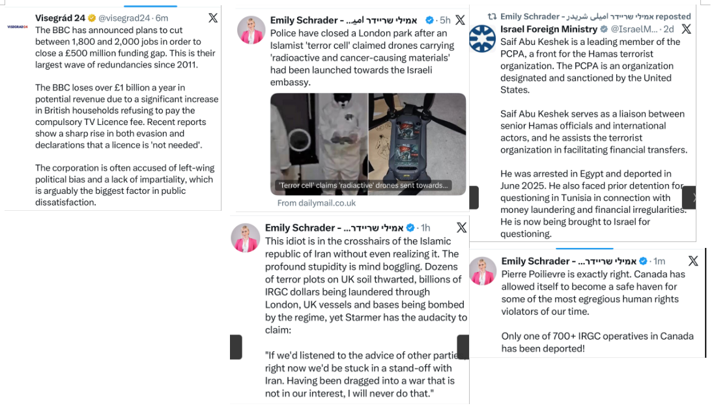
La terza via di Pechino: Il capitalismo di rapina e la dottrina del "far scontrare i barbari"
Per completare la mappa del parassitismo globale è necessario analizzare la strategia della Cina, che rappresenta una raffinata "terza via" rispetto alla violenza bruta dell'IRGC e al soft power corruttivo del Qatar. Il Partito Comunista Cinese (PCC) ha abilmente adottato le vesti del gioco capitalistico globale, dando al mondo la parvenza di essere un motore di creazione di valore. Nella realtà, il modello economico e geopolitico di Pechino è profondamente estrattivo, privo di etica interna, fondato sullo sfruttamento di fatto del lavoro forzato, sul soffocamento del dissenso e su una penetrazione globale apparentemente "pacifica" (*peaceful rise*). Questa strategia di conquista silenziosa poggia su una millenaria filosofia asimmetrica: "controllare i barbari attraverso i barbari" (yǐ yí zhì yí), ovvero destabilizzare l'Occidente alimentando i conflitti regionali e lasciando che i rivali si logorino tra loro, mentre Pechino assimila silenziosamente ogni informazione, brevetto e tecnologia strategica per i propri fini di dominio.
L'esercito invisibile delle ombre: Spionaggio biologico e cyber-infiltrazione
I recenti sviluppi giudiziari emersi negli Stati Uniti nel 2026 squarciano il velo su questa mastodontica rete di infiltrazione e spionaggio. Il caso di Youhuang Xiang, ricercatore presso la Indiana University e membro coperto del PCC, è emblematico: l'uomo è stato condannato e immediatamente deportato dopo aver confessato il contrabbando di materiale biologico critico (DNA plasmidico di E. coli) spedito da una sussidiaria cinese e occultato all'interno di pacchi falsamente etichettati come biancheria intima femminile. Xiang era riuscito a penetrare nel sistema accademico statunitense mentendo sulla sua affiliazione al Partito per ottenere un visto di ricerca. Parallelamente, la giustizia americana ha registrato la colpevolezza di Thomas Weir Pauken II, un cittadino statunitense convertito in agente d'influenza per conto del Ministero della Sicurezza di Stato cinese (MSS); dietro un compenso di centinaia di migliaia di dollari, Pauken era incaricato di infiltrare la classe politica americana e di ottenere l'accesso a tecniche e asset di cyber-spionaggio avanzato.
Ancoraggi illegali e la cattura tecnologica in Europa
La minaccia si estende ben oltre i confini dell'intelligence tradizionale, toccando la sicurezza interna e la proprietà intellettuale europea. Negli Stati Uniti, le indagini sul tentato attentato alla base aerea di MacDill in Florida hanno rivelato una preoccupante evoluzione delle tecniche di infiltrazione, con il coinvolgimento di soggetti nati sul suolo americano da cittadini cinesi entrati illegalmente nel Paese (i cosiddetti anchor babies), a dimostrazione di una pianificazione a lungo termine. In Europa, le autorità tedesche hanno recentemente tratto in arresto una coppia di coniugi con cittadinanza tedesca, Xuejun C. e Hua S., accusati di spionaggio sistematico a lungo termine per conto di Pechino. Operando sotto la copertura di traduttori e dipendenti del settore automobilistico, i due agganciavano scienziati e ricercatori occidentali specializzati in tecnologie dual-use (aerospazio, aviazione, IT e intelligenza artificiale). Il modus operandi ricalca perfettamente la strategia parassitaria dell'assimilazione: gli scienziati venivano invitati in Cina per conferenze apparentemente civili e lautamente retribuite, che si rivelavano invece veri e propri tavoli di debriefing tecnico davanti a esponenti delle industrie della difesa dello Stato cinese.
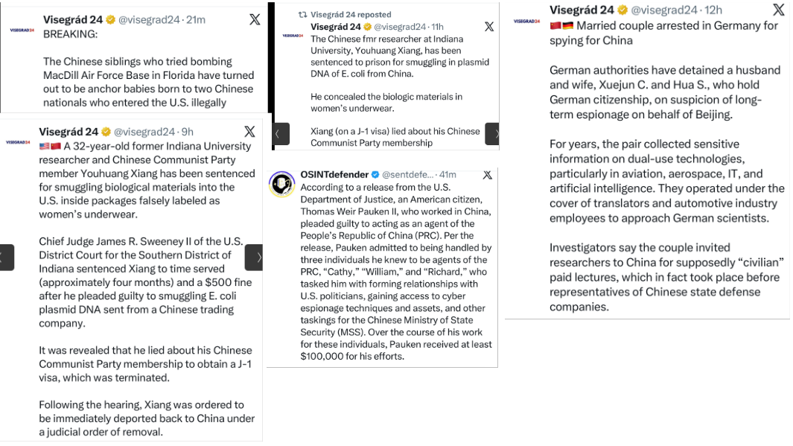
Guerra d'informazione: Il caso Neville Roy Singham e la macchina del PCC
L'architettura di questa infiltrazione non è teorica, ma poggia su enormi strutture finanziarie e strategiche radicate proprio all'interno del mondo democratico. Una recente inchiesta giornalistica ha esplorato in profondità come il magnate tecnologico americano Neville Roy Singham abbia edificato una vera e propria macchina della propaganda globale, strutturata su precise strategie di matrice maoista per promuovere gli interessi del Partito Comunista Cinese e, contemporaneamente, seminare discordia e polarizzazione ideologica all'interno degli Stati Uniti. L'indagine dimostra come la cosiddetta "House of Singham" non sia affatto un insieme spontaneo di movimenti di base e associazioni indipendenti, bensì un apparato transnazionale multimilionario e altamente coordinato. L'obiettivo ultimo di questa guerra asimmetrica è duplice: da un lato, plasmare la percezione internazionale per "raccontare bene la storia della Cina" e, dall'altro, destabilizzare gli assetti strategici e sociali dell'Occidente attraverso operazioni sistematiche di guerra psicologica e informativa, i cui dettagli e flussi finanziari sono stati svelati nell'inchiesta Shanghai Sabotage: Inside Singham's secret strategy to demonize America.
Dall'URSS a Pechino: La persistenza della sovversione ideologica
Questa strategia di logoramento interno non nasce dal nulla, ma rappresenta l'evoluzione tecnologica e globale di dottrine di destabilizzazione psicologica ampiamente collaudate nel secolo scorso. La transizione dai metodi sovietici della Guerra Fredda alle moderne campagne di cattura culturale di Pechino e Teheran risponde a una grammatica comune della manipolazione, in cui il nemico non viene attaccato frontalmente sul campo di battaglia, ma viene indotto a distruggersi da solo, corrompendo i propri centri educativi, informativi e morali. Comprendere questa continuità storica è fondamentale per decodificare il motivo per cui l'Occidente odierno fatichi a identificare la natura parassitaria di queste minacce, scambiando operazioni coordinate di intelligence straniera per legittimo dissenso interno o pluralismo culturale.
L'Asse del Pacifico e la militarizzazione unilaterale: I fatti del 2026
La strategia della "conquista silenziosa" della Cina non esclude, laddove Pechino lo ritenga necessario, l'uso della forza asimmetrica e della coercizione geopolitica per ridefinire i confini e isolare le democrazie asiatiche. Gli sviluppi più recenti del 2026 confermano una preoccupante accelerazione nell'architettura dei blocchi autoritari: il viaggio ufficiale del Ministro degli Affari Esteri cinese Wang Yi a Pyongyang, per incontrare la controparte nordcoreana Choe Son-hui, segna la ripresa formale dei vertici ad altissimo livello tra le due nazioni, rimasti congelati dal 2019. Questo consolidamento dei legami con la dittatura dei Kim si salda con una postura militare sempre più aggressiva nel Mar Cinese Meridionale. Le forze di Pechino hanno recentemente ingaggiato un pericoloso scontro nell'area del Kalayaan Island Group, sparando razzi segnaletici direttamente contro un aereo della Guardia Costiera filippina nei pressi del Zamora Reef. Quest'ultimo, sottratto unilateralmente dalla Cina tra il 2014 e il 2015 attraverso una mastodontica operazione di bonifica artificiale di 4 km², è stato trasformato in una vera e propria fortezza militare illegale, dotata di una pista d'atterraggio di 3.000 metri, batterie missilistiche terra-aria e radar, in aperta violazione del diritto internazionale e della sentenza della Corte di Arbitrato del 2016.
Isolamento di Taiwan e nervosismo strategico
Parallelamente all'espansione militare sul campo, Pechino continua a esercitare un parassitismo diplomatico volto a soffocare lo spazio vitale delle democrazie limitrofe. Il ministero degli Esteri cinese ha imposto il veto assoluto alla partecipazione di Taiwan alla 79ª Assemblea della World Health Organization (OMS), ribadendo che Taipei non ha "alcun diritto" di presenziare senza il placet del governo centrale comunista. Questa asfissia diplomatica si accompagna a un profondo nervosismo strategico da parte della leadership cinese di fronte al risveglio delle democrazie regionali. Durante i recenti vertici bilaterali, Xi Jinping ha manifestato forte irritazione nei confronti dei piani di rimilitarizzazione e dell'aumento della spesa per la difesa intrapresi dal Giappone sotto la guida del Primo Ministro Sanae Takaichi; un'ansia geopolitica liquidata dalla controparte statunitense, che ha difeso la necessità storica di un Giappone militarmente forte per contrastare le costanti minacce nucleari della Corea del Nord.
Il "Lockdown Digitale": Operare in territorio nemico
Ma l'indicatore più clamoroso della natura intrinsecamente ostile e parassitaria del sistema cinese emerge dalle misure di sicurezza senza precedenti adottate dalle delegazioni occidentali in visita a Pechino nel 2026. L'intera delegazione statunitense, guidata dal Presidente Trump e comprendente i CEO delle maggiori multinazionali americane, si è vista costretta a operare sotto un regime di totale "lockdown digitale". Funzionari, agenti del Secret Service e top manager hanno dovuto lasciare in patria i propri smartphone, laptop e tablet personali, sostituendoli con dispositivi "puliti" monouso, privi di dati e con funzionalità drasticamente limitate. Le linee guida federali vietano tassativamente l'utilizzo di reti Wi-Fi locali o l'inserimento di cavi in porte USB sconosciute e stazioni di ricarica pubbliche, a causa del rischio sistemico di inoculazione di malware o di esfiltrazione massiva di dati. Questa quarantena tecnologica, nonostante le smentite di facciata dell'ambasciata cinese, dimostra che l'Occidente ha finalmente compreso una dura verità: in Cina, qualsiasi infrastruttura civile ed elettronica è potenzialmente un'arma di spionaggio e assimilazione, progettata per parassitare i segreti tecnologici, industriali e politici delle democrazie.
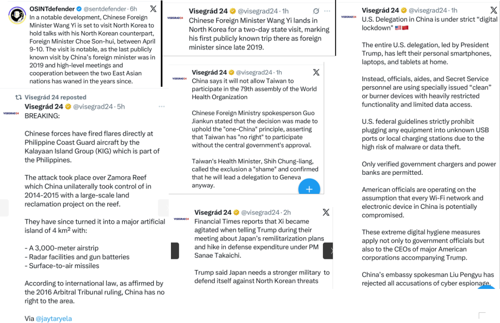
Il peccato originale di Pechino: Il massacro di Tiananmen e la cancellazione della memoria
Il disprezzo assoluto per la sacralità della vita umana e la sua totale subordinazione ai fini politici ed estrattivi del regime non sono un'evoluzione recente della Repubblica Popolare Cinese, ma costituiscono il peccato originale su cui poggia l'attuale potere del Partito Comunista Cinese. La ricorrenza del 37° anniversario del massacro di Piazza Tiananmen, avvenuto il 4 giugno 1989, squarcia il velo sulla brutalità intrinseca di un sistema capace di schierare l'esercito e i carri armati contro migliaia di propri studenti, operai e civili pacifici, colpevoli solo di richiedere riforme democratiche, libertà di espressione e trasparenza contro la corruzione generalizzata. Le immagini storiche che riemergono, come lo scatto integrale del celebre "Rivoltoso Sconosciuto" (*Tank Man*) che da solo blocca un'intera colonna di blindati, o i rari fotogrammi dei corpi lasciati sull'asfalto dalle forze di sicurezza comuniste, rimangono monumenti indelebili di un sacrificio che nessuna censura di Stato potrà mai cancellare, nonostante i disperati tentativi di Pechino di ripulire la propria storia.
La crudeltà burocratica e la retorica del regime
La ferocia del PCC non si esaurisce nell'atto storico della repressione del sangue, ma si perpetua nel tempo attraverso una sistematica e spietata violenza psicologica contro i sopravvissuti e le famiglie delle vittime. Le denunce di Amnesty International evidenziano come le autorità cinesi abbiano recentemente negato persino alle "Madri di Tiananmen" il permesso di recarsi al cimitero di Wan'an a Pechino per commemorare i propri figli uccisi. Questo divieto rappresenta un salto di qualità nella crudeltà del regime: non si tratta più solo di azzerare la memoria collettiva e storica di una nazione, ma di estirpare con la forza il lutto privato, la memoria personale e affettiva dei genitori. Di fronte a queste evidenze, la risposta ufficiale del Ministero degli Affari Esteri cinese rasenta il cinismo geopolitico, liquidando la strage come una semplice "turbolenza politica della fine degli anni '80" e intimando all'Occidente di non usare i diritti umani come pretesto di ingerenza, rivendicando la via della modernizzazione cinese come "una scelta della storia" supportata dal popolo.
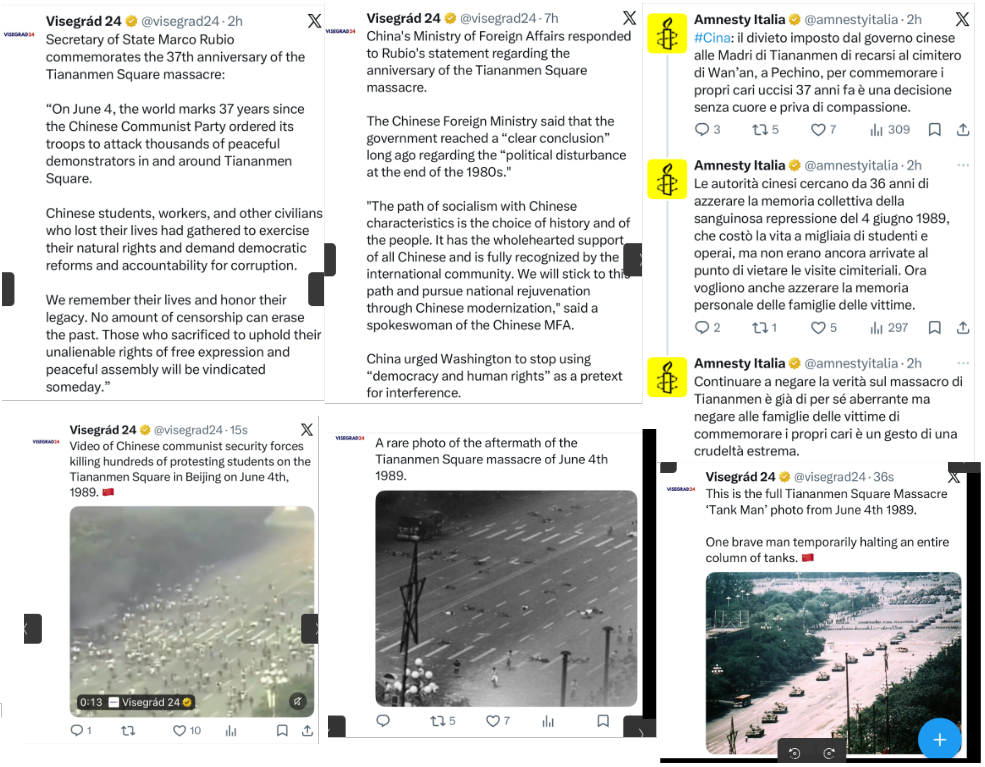
La vita umana come Weaponization e i barbari alle porte
Questo approccio utilitaristico e amorale, in cui l'individuo non possiede alcun valore intrinseco ma esiste esclusivamente come ingranaggio sacrificabile per la sopravvivenza dello Stato, è la chiave di volta per comprendere la postura globale della Cina e degli altri sistemi parassitari analizzati in questa inchiesta. Quando un regime non ha alcuna esitazione a massacrare i propri giovani all'interno dei propri confini e a perseguitarne le madri a distanza di quasi quarant'anni, risulta evidente che non avrà alcuno scrupolo etico nell'utilizzare le vite umane dei cittadini stranieri come vettori di destabilizzazione geopolitica. Questa totale assenza di etica si riflette perfettamente nella dottrina asimmetrica di lasciare che i rivali si logorino da soli. Ed è proprio in quest'ottica di logoramento controllato che sorge l'interrogativo più inquietante e attuale per le democrazie occidentali: se la manipolazione dei flussi migratori di massa verso l'Europa e gli Stati Uniti non sia, in realtà, l'ennesimo strumento ingegneristico attivato da Pechino per sovraccaricare i nostri sistemi sociali, polarizzare il dibattito pubblico e, fedele alla sua millenaria filosofia, fare in modo che i "barbari" si scontrino e si distruggano tra loro.
L'arma della migrazione di massa e la complicità delle élite occidentali
L'assenza di etica e la strumentalizzazione della vita umana da parte dell'asse autoritario trovano la loro massima espressione geopolitica nella gestione e nel direzionamento dei flussi migratori clandestini. Quella che i media mainstream occidentali si ostinano a descrivere come una crisi umanitaria spontanea è, in realtà, un'industria transnazionale iper-regolata e tollerata, che agisce come una vera e propria arma asimmetrica di destabilizzazione. Le indagini della magistratura francese hanno recentemente squarciato il velo sulla rete di trafficanti guidata dall'iracheno Abu Hussein al-Iraqi, un network criminale capace di muovere migliaia di clandestini dall'Iraq attraverso Turchia, Grecia, Bulgaria e Francia, fino alle coste del Regno Unito. Questa infrastruttura non si limita al trasporto logistico: offre sui social media pacchetti completi comprensivi di passaporti falsi, documenti finanziari contraffatti e visti Schengen fraudolenti, rassicurando i "clienti" sul fatto che, una volta calpestato il suolo britannico, le leggi garantiste delle democrazie occidentali renderanno pressoché impossibile la loro espulsione.
Il cinismo elettorale e la sanatoria del governo Sánchez
Questo assalto ingegneristico ai confini occidentali non potrebbe avere successo senza il parassitismo politico interno esercitato da una classe dirigente europea disposta a sacrificare la sicurezza nazionale per meri fini di bottega elettorale. Le ammissioni storiche dell'ex cancelliera tedesca Angela Merkel, la quale ha confessato di aver aperto i confini della Germania e deliberatamente favorito l'afflusso di migranti illegali ignorando l'opinione pubblica, con il preciso calcolo politico di sfruttare il voto dei nuovi arrivati per arginare le forze conservatrici, mostrano la spaventosa convergenza di interessi tra i trafficanti di uomini e i partiti tradizionali. Una dinamica speculare a quella in atto in Spagna, dove il governo di sinistra guidato da Pedro Sánchez ha approvato un decreto d'urgenza per la regolarizzazione massiva di una quota compresa tra i 500.000 e gli 800.000 migranti clandestini. Questa sanatoria lampo concede permessi di soggiorno e di lavoro immediati, inserendo centinaia di migliaia di irregolari su un binario preferenziale verso la cittadinanza e il voto, alterando artificialmente il corpo elettorale della nazione.
Il collasso morale e lo scontro tra i barbari: Conclusioni
Il prezzo più alto di questo parassitismo simbiotico non è solo economico o infrastrutturale, ma morale e identitario, e si consuma sulla pelle dei cittadini. Le cronache di Barcellona ne offrono un'immagine plastica e agghiacciante: durante il minuto di silenzio per commemorare una giovane donna brutalmente assassinata da un immigrato nordafricano, attivisti dell'estrema sinistra hanno interrotto la cerimonia con cori ideologici, insultando il dolore della famiglia presente. La reazione disperata di un familiare della vittima, che ha implorato il silenzio e il rispetto al di là della politica, fotografa il punto di rottura di una civiltà che ha smarrito persino l'istinto primordiale della pietà e dell'autoconservazione.
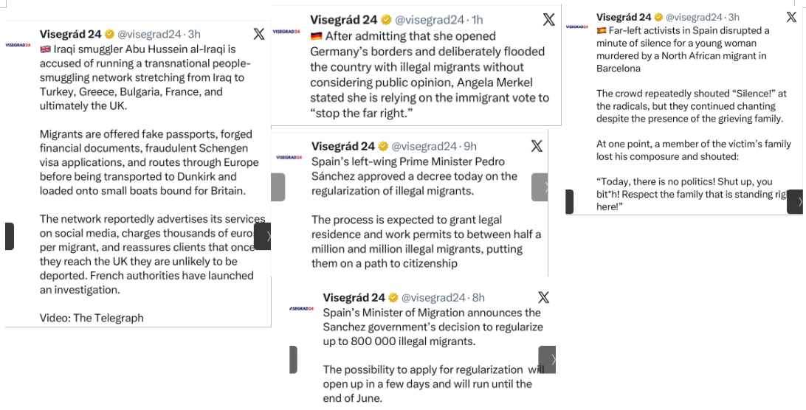
Si chiude così il cerchio della nostra inchiesta. Dalle bugie cibernetiche dell'IRGC alla corruzione accademica del Qatar, fino allo spionaggio biologico di Pechino e alla destabilizzazione demografica delle nostre città, l'Occidente si trova ad affrontare una minaccia parassitaria globale di natura esistenziale. I regimi autoritari non giocano secondo le regole della creazione di valore del libero mercato; preferiscono sfruttare le nostre libertà costituzionali, il nostro welfare e la nostra ingenuità per infiltrarsi nel tessuto democratico. Finché l'Europa e gli Stati Uniti continueranno a finanziare i propri distruttori, acquistando merci prodotte da schiavi, tollerando il riciclaggio nei propri centri finanziari e legalizzando i flussi migratori illegali usati come armi di pressione,, la profezia di Yuri Bezmenov rimarrà tragicamente attuale. La dottrina di Pechino di "far scontrare i barbari tra loro" si sta realizzando sotto i nostri occhi: l'Occidente si sta logorando dall'interno in una guerra culturale e ideologica intestina, lasciando la porta aperta a chi ha già pianificato la sua definitiva sottomissione.
"Tolerance will reach such a level that intelligent people will be banned from thinking so as not to offend the imbeciles" - Fyodor Dostoevsky